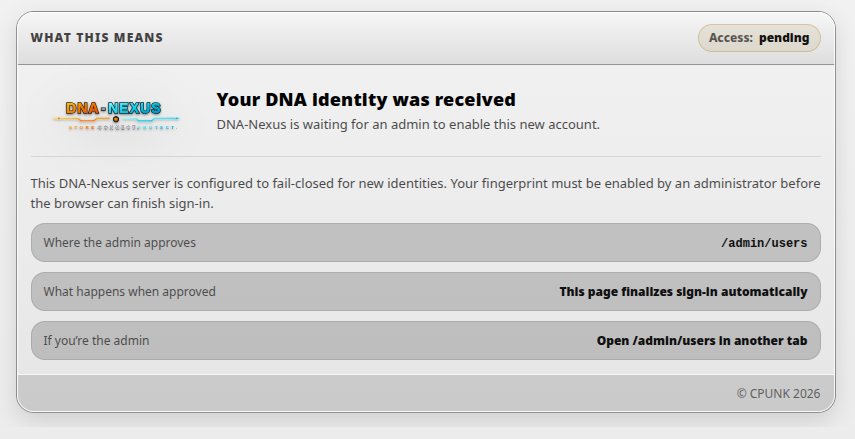
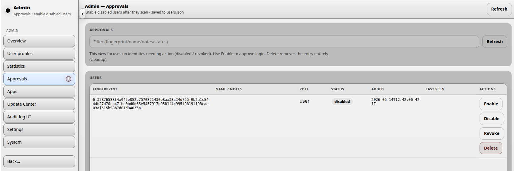
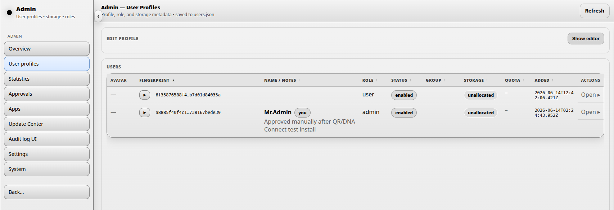
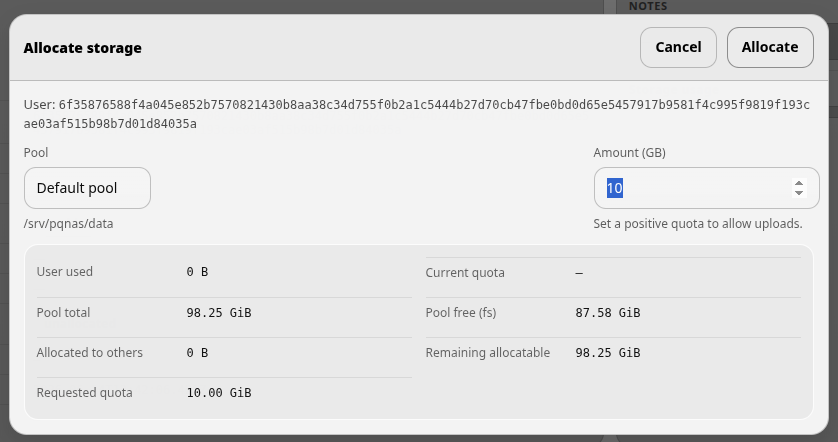

Creating users
This page explains how an administrator creates or approves DNA-Nexus user accounts.
Choose the correct user creation flow
DNA-Nexus can create users in different ways depending on which authentication method is enabled. These flows are intentionally separate because the administrator steps are different for each login mode.
Create or receive a user registration
The user account may be created by an administrator or requested by the user from the login page.
Review user details
Check the username, display name, role and intended storage quota.
Approve the user
Approve the user when the account is ready to access the server.
Tell the user to sign in
After approval, the user can sign in and start using DNA-Nexus apps.
Flow 1: Adding users with QR / DNA Connect
When QR / DNA Connect authentication is enabled, new users are created from the login page. The user scans the QR code with the DNA Connect mobile app, completes the login flow, and then waits for administrator approval.
In this mode, the administrator does not create the first account record manually. The server receives the user identity from the QR login flow and places the account into a pending state.
1. User scans the QR code
The user opens the login page and scans the displayed QR code with DNA Connect. After the scan succeeds, the browser shows a message telling the user to wait for administrator approval.
{kind=link}

2. Administrator approves the user
When a new pending user is waiting, the administrator sees a notification in the sidebar. Open the Approvals section to review the pending account.
Click Enable to activate the account. After this, the user disappears from the approvals page and becomes available on the User profiles page.
{kind=link}

3. Complete the user profile
After approval, open the user on the User profiles page. The administrator can edit the user’s display name, email address, role, notes and avatar.
{kind=link}

4. Allocate storage
The most important follow-up task is usually storage allocation. A user may be enabled, but still needs a storage quota before normal uploads are possible.
Click Allocate on the user profile. The allocation dialog lets the administrator choose a storage pool and assign a quota in gigabytes.
{kind=link}

The dialog shows both the requested quota and current pool capacity information. This helps the administrator avoid assigning more storage than the pool should safely reserve.
- User currently uses shows the user’s current storage usage.
- Current quota shows the existing quota, if one has already been assigned.
- Pool total size shows the total size of the selected storage pool.
- Pool free space shows the current free filesystem space.
- Reserved for others shows quota already assigned to other users.
- Remaining reservable shows how much quota can still be assigned safely.
- Requested quota shows the quota currently being assigned.